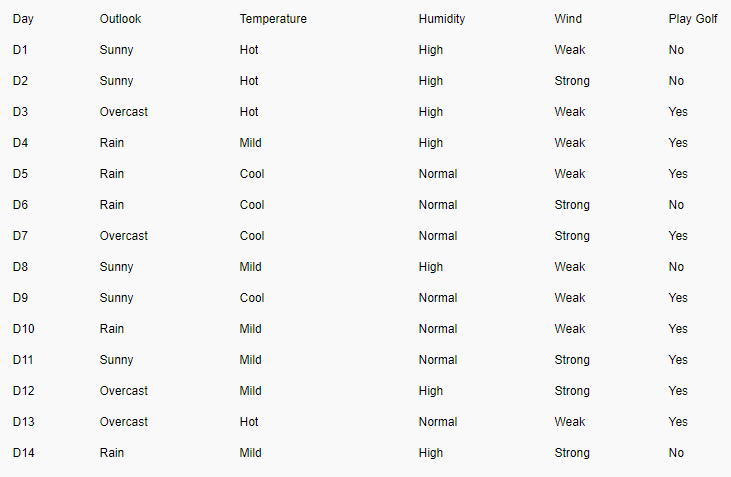
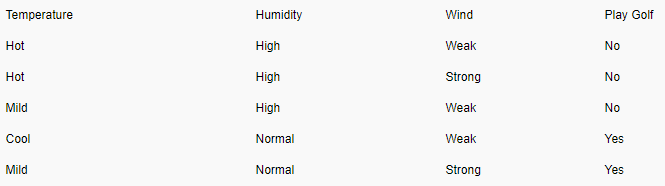
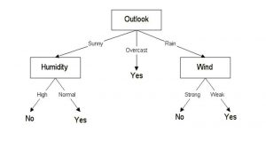

Tree based method
Decision Tree—An Example

-
Example is from: https://www.xoriant.com/blog/product-engineering/decision-trees-machine-learning-algorithm.html
- Compare performance of different columns
- Performance is calculated using Entropy (purity) and Information Gain (IG) (i.e. parents - children)
- Higher IG means better
- P(x) is the probability (proportion) of event x
- H(S) entropy for what we want to classify (i.e. parent)
\(Entropy(S) = - ( \frac{9}{14})log_2( \frac{9}{14}-( \frac{5}{14})log_2(\frac{5}{14})=0.940\)
- Play Golf: 5 “no”, 9 “yes”
Decision Tree: “Wind”
- H(S) = 0.94
Decision Tree
- Choose column “Outlook”
- “Sunny” branch
- Keep divide data for each branch

\(IG(S,Outlook) = 0.246\) \(IG(S,Temperature) = 0.029\) \(IG(S,Humidity) = 0.151\) \(IG(S,Wind) = 0.048 (Previous example)\)

</span>
\(H(S_{sunny})=(\frac{3}{5})log_2(\frac{3}{5})-(\frac{2}{5})log_2(\frac{2}{5}) = 0.96\) \(IG(S_{sunny},Humidity) = 0.96\) \(IG(S_{sunny},Temperature) = 0.57\) \(IG(S_{sunny},Wind) = 0.019\)
- Final decision tree

Let’s build a decision tree
- C4.5 algorithm advantages:
- Inexpensive to construct
- Extremely fast at classifying unknown records
- Easy to interpret for small-sized trees
- Robust to noise (especially when methods to avoid overfitting are employed)
- Can easily handle redundant or irrelevant attributes (unless the attributes are interacting)
- C4.5 algorithm disadvantages:
- Space of possible decision trees is exponentially large.
- Greedy approaches are often unable to find the best tree.
- Does not take into account interactions between attributes. For example, age and height
- Each decision boundary involves only a single attribute. This may not work for some complex situations.
Decision Tree: Sample Code
- Let’s have a look at: tree_based_method
- We can control overfitting issue with max_depth, max_leaf_nodes
| Index | Prev | Next |